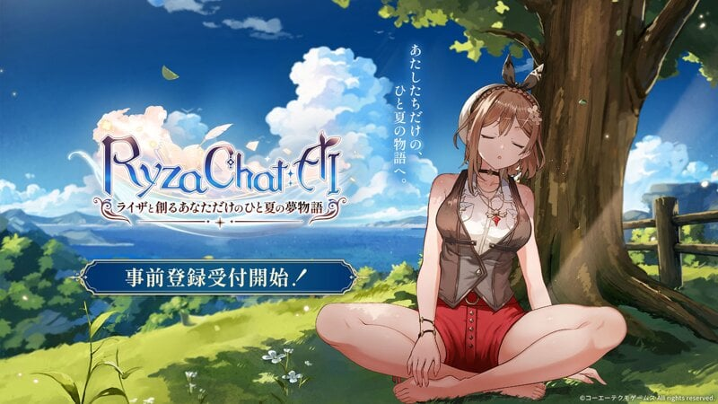
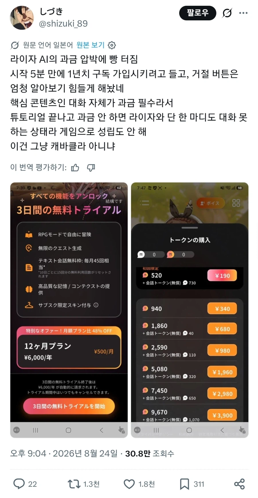
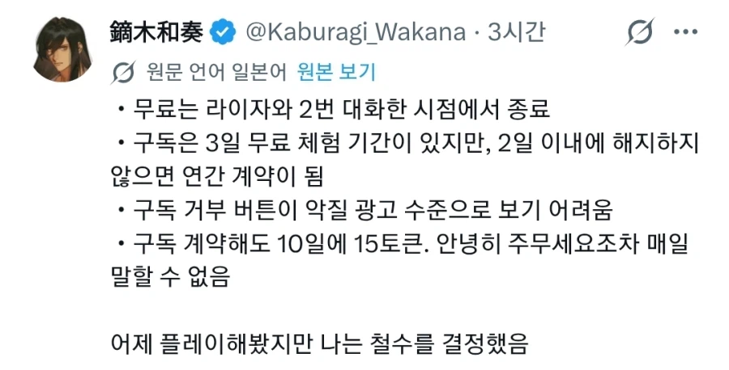
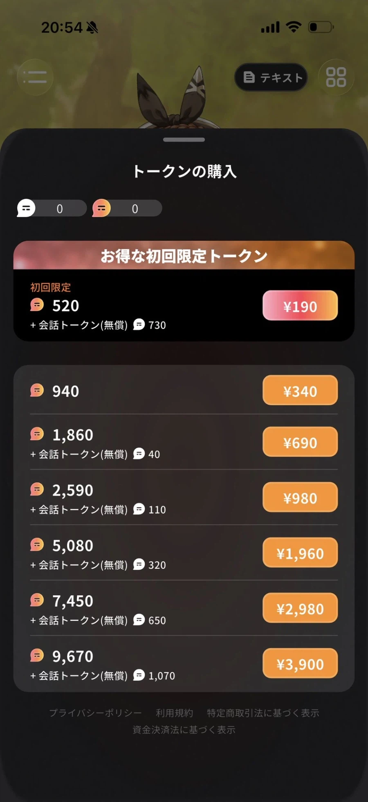

라이자의 아틀리에 라는 게임 IP를 활용한
모바일 RPG 게임이 일본에서 출시됐다.
플레이어가 직접 입력하는 문장을 바탕으로
서사가 전개되는 시나리오 방식을 채택했고,
'인기가 많은 캐릭터인 라이자와 대화를 나눌 수 있다'
라는 점을 주요 특징으로 삼아 광고를 잔뜩한 게임이다.
팬들은 큰 기대를 품고 게임이 나오길 기다렸다.
그리고 마침내 출시된 게임은,



주요 특장점인 라이자와의 대화가 유료라는 건
플레이어들도 예상했지만
정기 구독을 해도 하루 두어번 정도의 대화 밖에
못 한다는 것에 경악하며 게임을 삭제하는 사례가 속출했다.
게임 자체는 그냥 양산형 폰겜이라 붙잡고 할 매력은 없다고.
댓글
수집 당시 댓글 3개
무알콜맥주 · 6 시간 전
심심이 vs 라이자
거제야호 · 3 시간 전
마이마자화자 부라자 화이자 라이자
AnanasPizza · 3 시간 전
AI(유료)여친ㅋㅋ 일론이 만든 그록 사이버 여친은 어떻게 됐나